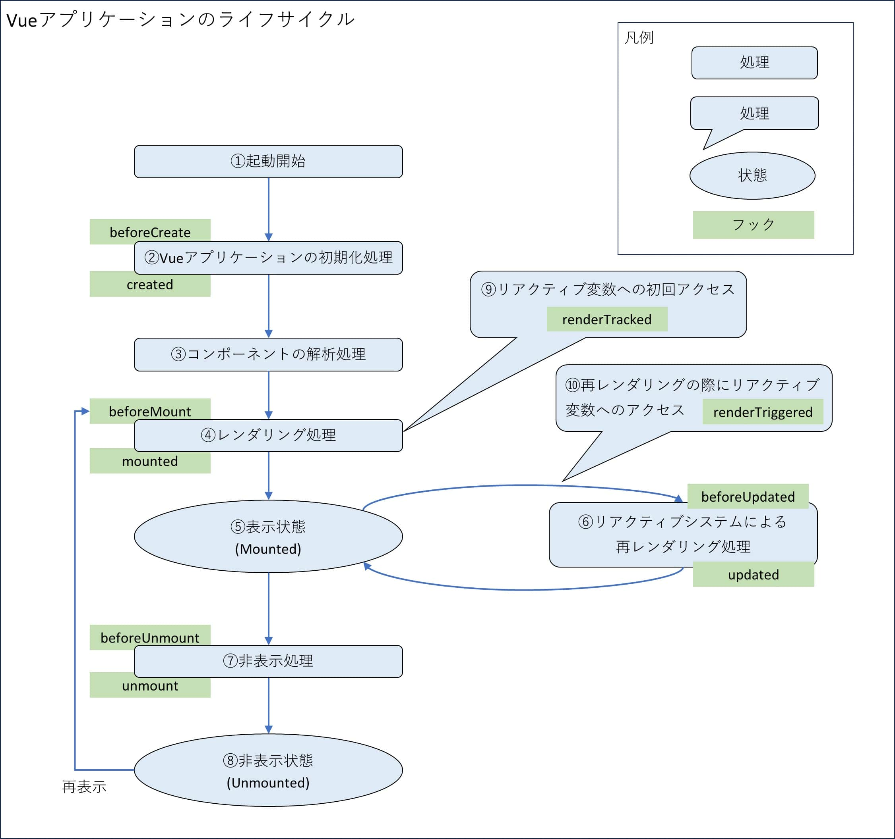
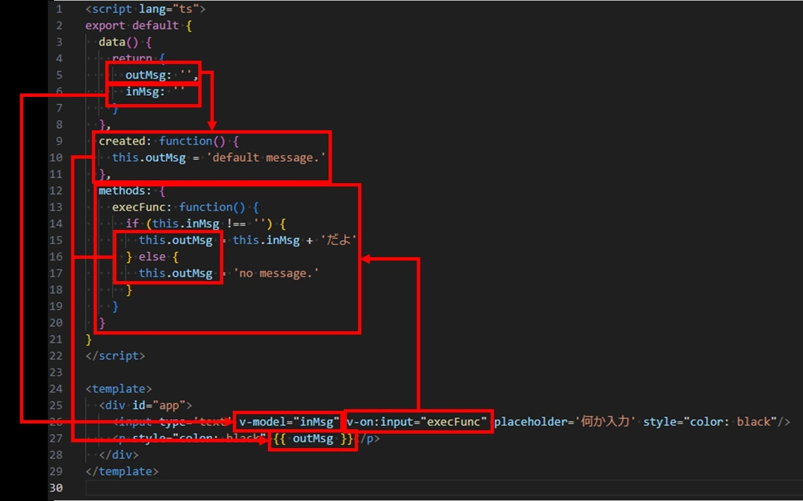
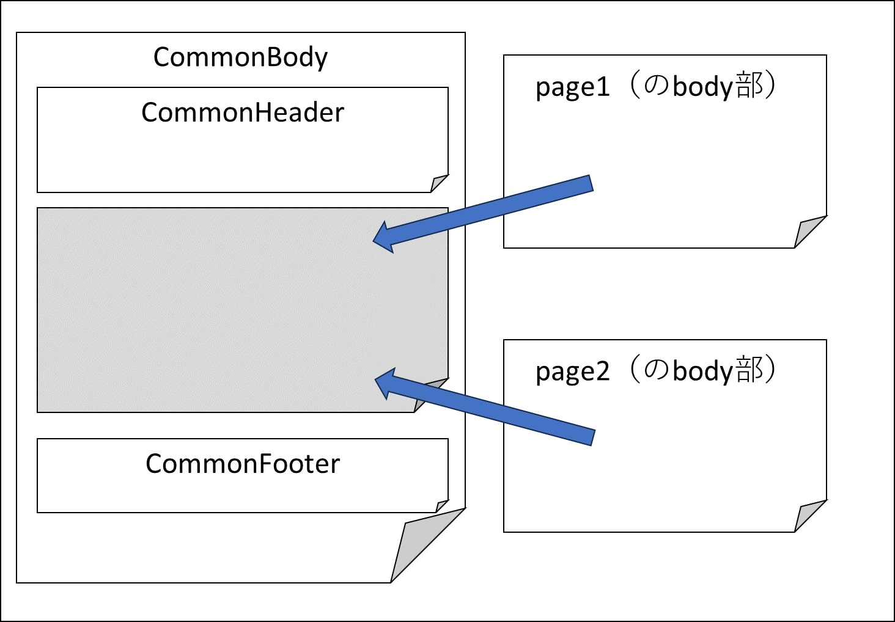
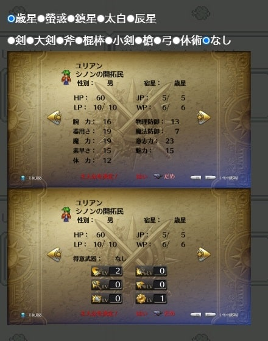
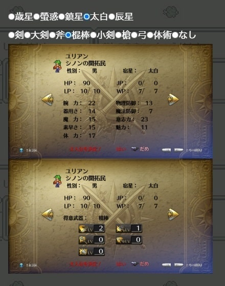

Vue.js/Nuxt
はじめに
このページは、SPA(Single Page Application)の続きのページです。
ここではVue.jsとNuxtにスポットを当てて記載していきます。
一応このページから読み進めても問題ないように構成したつもりですが、先のページを見てからの方が、Vue.jsとNuxtについて理解が深まるかもしれません。
Vue.js
Vue.jsは、DOM要素とJavaScriptのデータを結びつけるリアクティブなデータバインディングを提供するフレームワークです。2014年にリリースされました。
リアクティブ・プログラミングを特徴としています。リアクティブとは、『何かの値が変化するとそれに連動して表示内容が自動で変化する仕組み』のことです。
2020年9月にVue3がリリースされましたが、その時点では、Vueに付随する主要なモジュールがバージョン3未対応のままという状態でした。
2022年2月7日に主要なモジュールも含めて、Vueを作成するプロジェクトのデフォルトのバージョンが3になりました。Vue3でTypeScriptにも対応しました。
Vue.jsは、SFC(Single File Components)とVueインスタンスがリアクティブなシステムを作る上でのポイントとなります。
SFC(Single File Components)
Vueプロジェクトでは、SFC(Single File Components)という拡張子.vueのファイルを作成します。SFCはHTMLとCSS、それらを制御するJavaScriptをワンセットで画面を部品化したものです。
SFCで作ったコンポーネントを組み合わせてUIを構築していくのがVueの仕組みです。
.vueファイル構造<script setup lang="ts">
...
</script>
<template>
...
</template>
<style>
...
</style>
<script></script>内にJavaScriptを、<template></template>にブラウザのbody部に表示する内容を、<style></style>に適応するCSSをコーディングしていきます。
ライフサイクルフック
この<script></script>内でVueインスタンスを生成し、Vueインスタンスを介して<template></template>を操作することでリアクティブなシステムを実現しています。
操作するにはVueのライフサイクルフック及び、Vueインスタンス内に定義した関数を使用する必要があり、以下のようなものがあります。

※図は書籍、Vue 3 フロントエンド開発の教科書 P150の図を管理人が独自に加筆・修正したもの
Vueインスタンスに定義したdataをtemplateに埋め込み、フックや関数を介してdataを操作することでリアクティブなシステムを構築することができます。
以下はVue.jsのコード例です。VueインスタンスにoutMsgとinMsgを定義し、ライフサイクルフックの created でデフォルト値を設定。
textに入力すると「だよ」という文字列を付与してブラウザに表示します。
※ created なんて使わずに outMsg: 'default message.' と定義すればいいのですが、サンプルなので無理矢理ですが created を使ってみました。
恐ろしく簡素なページですが、一応以下のリンク先で実際に触ることができます。
サンプル
ソースコードは以下の通り。
<script lang="ts">
export default {
data() {
return {
outMsg: '',
inMsg: ''
}
},
created: function() {
this.outMsg = 'default message.'
},
methods: {
execFunc: function() {
if (this.inMsg !== '') {
this.outMsg = this.inMsg + 'だよ'
} else {
this.outMsg = 'no message.'
}
}
}
}
</script>
<template>
<div id="app">
<input type='text' v-model="inMsg" v-on:input="execFunc" placeholder='何か入力' style="color: black"/>
<p style="color: black">{{ outMsg }}</p>
</div>
</template>
構造を図解するとこんな感じです。

マスタッシュ構文
上記コードの{{ outMsg }} はマスタッシュ構文と呼ばれるもので、スクリプトブロックで用意した変数を表示するための構文です。ここではスクリプトブロック内で宣言した変数 outMsg を表示しています。タグとタグに囲まれた部分（要素のテキスト部分）にしか使えません。
ディレクティブ
v-model や v-on という属性はディレクティブと呼ばれるもので、 template 内の属性にデータや関数などをバインドするものです。主なディレクティブには以下のようなものがあります。
| ディレクティブ | 役割 |
|---|---|
| v-bind | データバインディング |
| v-on | イベント処理 |
| v-model | 双方向データバインディング |
| v-html | HTML 文字列表示 |
| v-pre | 静的コンテンツ表示 |
| v-once | データバインディングを初回のみに制限 |
| v-cloak | マスタッシュ構文の非表示 |
| v-if | 条件分岐 |
| v-show | 表示・非表示の制御 |
| v-for | ループ処理 |
ファイルパスルータ
Vueにはファイルパスルータという機能があります。これはNext.jsのファイルベースルーティングと同じものと考えていいと思います。
pages フォルダ配下に格納するファイルパスの構造がそのままルーティングパスになります。
Nuxt
2022年11月16日にVue3に対応したNuxt3がリリース。ネット上はNuxt2とNuxt3の記事が混在している印象がある（2024年3月現在）ので、閲覧している情報がNuxt2のことを言っているのか3のことを言っているのか注意する必要がある。
Nuxt2までは、アプリケーション全体で1つのレンダリングモード(SPA/SSG/SSR)しか指定できませんでした。
Nuxt3でページ単位にレンダリングモードを指定できるようになり、種類も増えて大幅に進化しています。Nuxt3でTypeScriptにも対応しました。
レンダリング
Nuxtで使えるレンダリングモードとその実装方法は別ページでまとめているのでそちら参照。
作った物
ゲームのサガシリーズが好きなので、シリーズの中でも1, 2を争う人気のロマンシングサガ3に関するものを作ってみました。
ロマサガ3の記事としては未完成ですが、Vue.js/Nuxtアプリケーションとしてはとりあえず動くようにはなっている状態。とりあえず作った後に勉強したので今見ると作り直したくなる感じはあるが、一旦現時点（2024年5月）のものとして公開してみます。
各ページのレイアウトを統一するために、共通部分を CommonBody, CommonHeader, CommonFooter に分け、ページ毎に異なる部分を別途作成してそれを埋め込む形で作成しています。

コードレベルだと以下のようになっています（かなり簡略化しています）。
以下は共通のフッター。共通のボディ部から呼び出す。
CommonFooter.vue<template>
<div>
<footer>
"フッターに記載する内容をここに書く"
</footer>
</div>
</template>
以下は共通のbody部。<CommonFooter />の所で上記CommonFooterコンポーネントを呼び出し。
CommonBodyを呼び出した側で pageTitle を設定し、<h2>{{ pageTitle }}</h2>に代入。
<slot name="body"></slot>の部分に、呼び出し側の<template v-slot:body>の内容を埋め込む。
CommonBody.vue<script setup lang="ts">
interface Props {
pageTitle: string // 当コンポーネントの呼び出し元で設定する変数を定義
}
defineProps<Props>()
</script>
<template>
<body>
<section>
<h2>{{ pageTitle }}</h2> // 定義した変数を設定
<slot name="body"></slot>
<br/>
</section>
<CommonFooter /> // 上で定義したFooterをここに読み込む
</body>
</template>
各ページの内容を pages ディレクトリ配下に作成。
ファイル名を page.vue としているため、サーバー起動後、http://ホスト名:3000/page でアクセスできる。
pages/page.vue<template>
<CommonBody v-bind:pageTitle="ページのタイトルをここに入れる">
<template v-slot:body>
ページ毎の内容をここに書く。
v-slot:body としているため、CommonBody.vueの「<slot name="body"></slot>」に埋め込まれる。
</template>
</CommonBody>
</template>
<script setup lang="ts">
スクリプトをここに書く
</script>
基本的に上記のような構成で全てのページを作成しています。
実際に作った物は大まかに以下。
- ロマサガ3のキャラクター一覧
- 一覧から詳細への遷移
- 詳細画面でラジオボタンを選択すると画像が切り替わる
ゲーム内に登場するキャラクターの一覧がこちら。テーブルのヘッダー部分を操作することで表示対象を絞ったり、並び替えができるようになっており、その度に一覧の部分だけが再レンダリングされるようになっています。
また、一覧のキャラクター名がリンクになっていて、そこから当該キャラクターの詳細情報を確認できる画面に遷移できるようになっています
詳細画面ではラジオボタンを選択することで表示する画像が切り替わるようになっている部分があり、これもその部分だけがリアクティブに切り替わるようになっています。
初期表示

ラジオボタンの選択を変更すると、それに対応する画像に切り替わるようになっている。

Vue.js/Nuxtを使って作ってみたものの紹介は以上です。
参考書籍


参考サイト